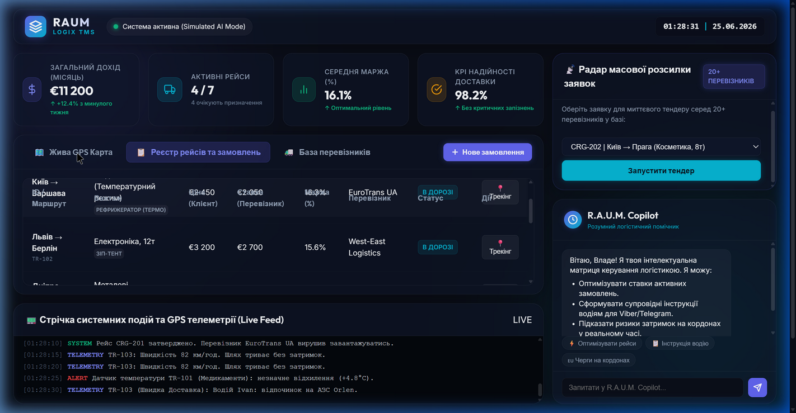

Logistics TMS & Telemetry Dashboard
JavaScript · Leaflet.js · Chart.js · CSS Grid
Production-ready transport management system dashboard providing real-time fleet visibility, interactive vehicle telemetry, and freight dispatch operations. Developed to optimize route planning, monitor active truck telemetry, and automate carrier freight-bidding workflows.
- Live Leaflet.js tracking with optimized truck routing, active ETA recalculation, and fleet overlays
- Telemetry analysis dashboard built with Chart.js tracking fuel consumption, speed, and engine load metrics
- Automated freight bidding system with real-time update notifications and instant carrier dispatcher matching
⚙️ Under the Hood & Challenge
Architected a high-performance telemetry dashboard syncing live IoT sensor streams with geographic map layers. Optimized render performance for concurrent multi-axis chart updates and integrated low-latency mapping APIs with custom lightweight vector markers.
